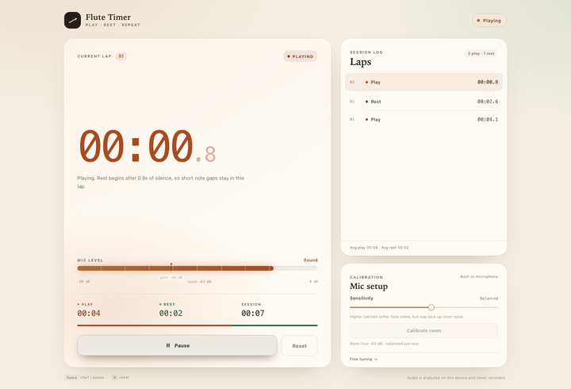

Laps that split themselves
Every stretch of playing and every gap of rest gets its own line, newest first. No tapping, no notes app, no guessing.
A hands-free timer for flute practice
Flute Timer listens while you play, counts every stretch of sound, and logs the silence in between. You keep both hands on the instrument; the session keeps itself.

How it works
The timer treats sound and silence as two halves of the same session. Start it once, and the clock follows the music.
One click gives the app your microphone and quietly measures the room. Nothing is recorded, saved, or uploaded.
Sustained sound opens a play lap. Short clicks and bumps are ignored, so a page turn does not start the clock.
When the sound stops for a moment, the play lap closes and a rest lap opens. The next note starts a fresh lap.
What you get
A stopwatch is only useful if you remember to touch it. This one is already listening, so the shape of the session is waiting when you stop.
Every stretch of playing and every gap of rest gets its own line, newest first. No tapping, no notes app, no guessing.
Play and rest totals sit beside the session clock, with a single bar that shows how the two compare at a glance.
Two quiet seconds tune the background level. Sensitivity and timing controls handle soft flutes, noisy rooms, and quick phrases.
Privacy
Flute Timer measures loudness in the moment to decide whether you are playing or resting. The sound itself is discarded as it arrives. There is no account, no upload, and no tracking.
From the practice notes
Short, practical notes about practice-room habits, the timer's little decisions, and what a play/rest log can tell you.
Why the silence between phrases deserves the same attention as the notes, and how to see your own balance.
Read the noteIt is not listening for notes. A plain-language tour of loudness, gates, calibration, and the small delays that keep laps honest.
Read the noteFor warm-ups, for repeated passages, and for the quiet audit at the end of a week. None of them turn practice into a score.
Read the noteOpen the timer, allow the microphone, and play. The clock will take it from there.